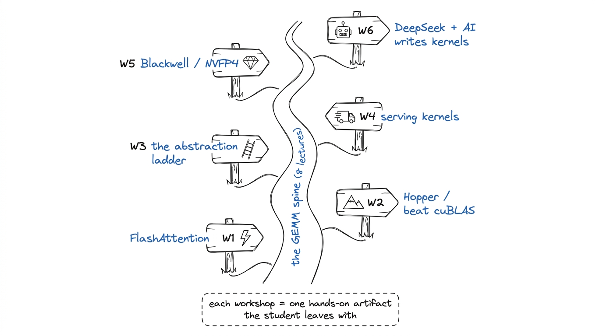
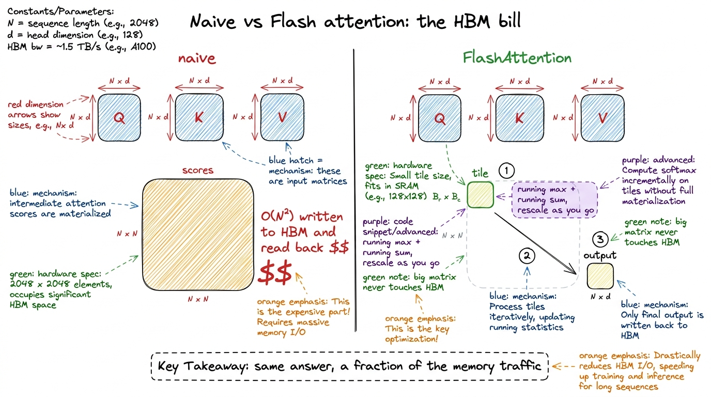
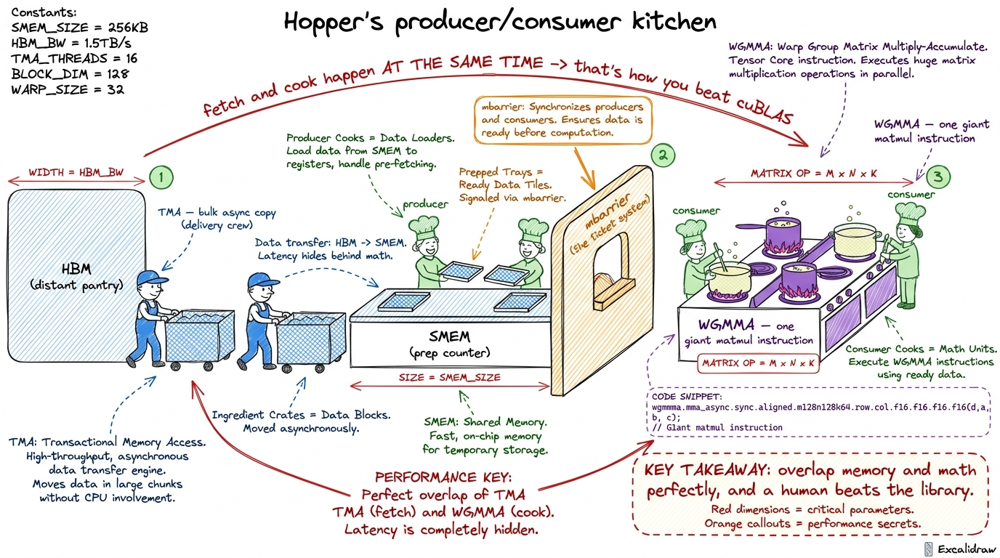
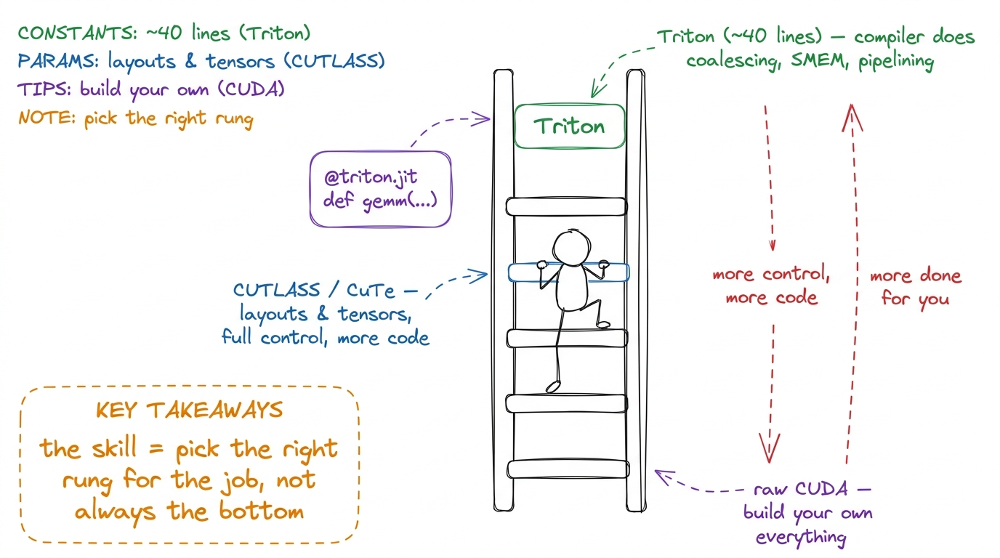
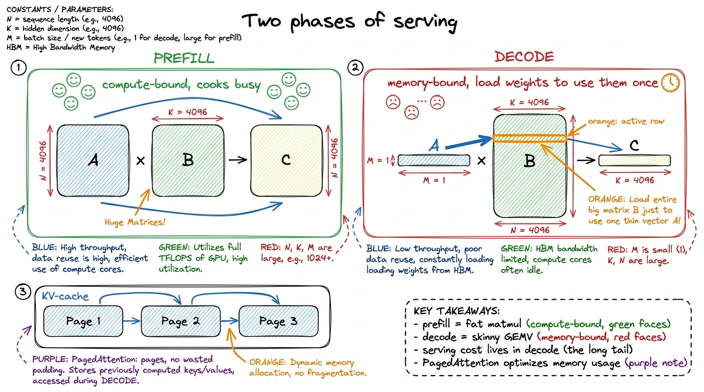
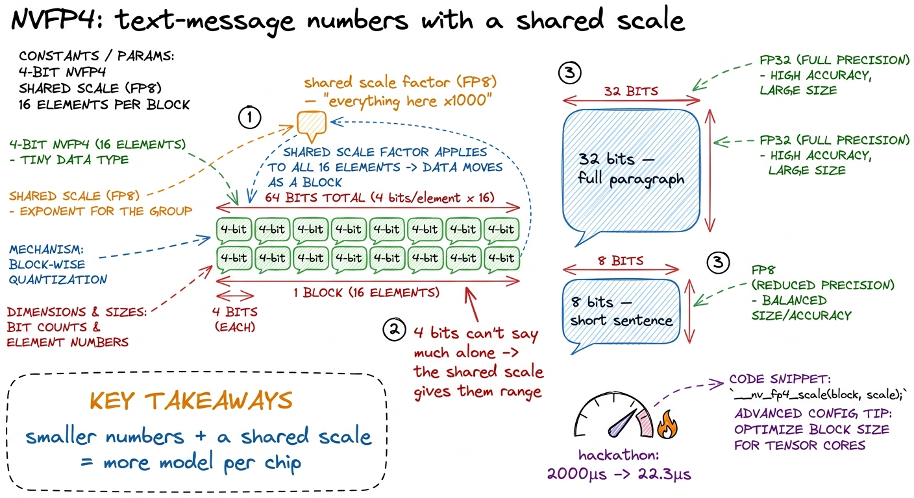
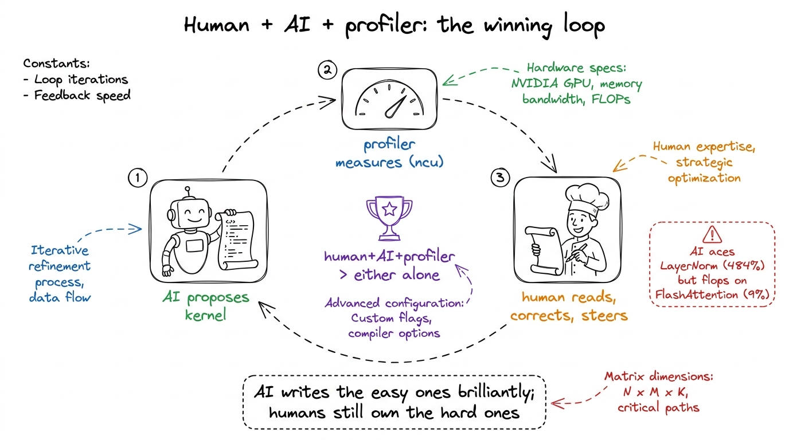

Workshop plans: the six deep-dives
By the end of this chapter you'll be able to walk into any of the six deep-dive workshops and run it — you'll know what each one is really about, the one metaphor that anchors it, the single live demo that makes the room gasp, and the exact minute-by-minute shape of the session. Think of this chapter as your set of six teaching maps. Each map is small enough to hold in your head and detailed enough that you never stand at the board wondering "what comes next?"
The eight foundational lectures build the spine: what a GPU is, how to program it, the memory hierarchy, the GEMM ladder. The six workshops are where that spine grows teeth — each takes the student to a real, modern, money-making frontier. A lecture teaches an idea. A workshop makes them build the thing. So every map below is built around one hands-on artifact the student leaves with.

figure rendering · The six workshops as trailheads branching off the main GEMM spine — eaW1 — FlashAttention from scratch
What it's really about: attention is the heart of every transformer, and the naive way to compute it wastes enormous memory traffic. FlashAttention is the fix that took over the industry. Here the student builds a working FlashAttention forward pass by hand.
The magic ingredient is online softmax: a way to compute softmax over a long row while only ever looking at one tile of it at a time, carrying a running maximum and a running sum, and rescaling the partial answer as new tiles arrive. Students find rescaling spooky, so slow down there.
[1, 3]; tile 2 is [2, 5]. Process tile 1: running max = 3, running sum of exp = e^(1-3)+e^(3-3) ≈ 1.14. Then tile 2 arrives with a bigger max of 5 — so you rescale the old sum by e^(3-5), then add the new tile's contribution. Land on the same answer you'd get from softmaxing all four at once. When they see the two paths agree, rescaling stops being scary.
figure rendering · The core of W1: naive attention pays for a giant matrix in HBM; FlashARunning the session (3 hours):
- 0–20 min — Board: attention as three matmuls plus a softmax. Draw the giant N×N scores matrix and circle it in red — "this is the enemy."
- 20–45 min — The online-softmax by-hand demo above. Everyone does it on paper with you.
- 45–90 min — Live build: the FA forward tiling loop, single head, simplified. Students type it. Add causal masking last (just "skip tiles above the diagonal").
- 90–100 min — Break.
- 100–150 min — Benchmark their kernel vs PyTorch SDPA. This is the jaw-drop.
- 150–180 min — Conceptual tour of FA2 (better work split) and FA3 (Hopper warp-specialization). No code, just "here's what changes and why."
W2 — Hopper: outperforming cuBLAS on H100
What it's really about: NVIDIA's own library, cuBLAS, is ferociously well-tuned. This workshop asks the audacious question — can a human beat it? — and walks two real worklogs where people did, on the H100 (the "Hopper" generation). The student learns the specific Hopper features that make it possible.
The three Hopper words to teach, in order: TMA (async bulk copies — the delivery crew), WGMMA (wgmma m64nNk16, a whole warpgroup doing one giant matmul instruction), and warp specialization (producers fetch, consumers compute, overlapping perfectly).

figure rendering · W2's anchor: Hopper as a specialized kitchen where a delivery crew feeRunning the session (3 hours):
- 0–25 min — Frame the challenge: "cuBLAS is the champion; today we study the two people who beat it." Draw the producer/consumer kitchen.
- 25–70 min — TMA and WGMMA walk-through with code snippets from the worklogs. Emphasize overlap, drawn as two timelines that slide over each other.
- 70–80 min — Break.
- 80–140 min — Live: read the actual Hopper SASS with them; find the WGMMA instructions and the async copies. This is a reading session, not a writing one — set that expectation.
- 140–180 min — The scoreboard: their understanding mapped onto the worklogs' final numbers vs cuBLAS. Discuss what the last few percent cost.
W3 — The abstraction ladder: Triton → CUTLASS/CuTe → TileLang
What it's really about: you don't always have to write raw CUDA. There's a ladder of tools, each higher rung doing more for you but giving you less control. This workshop climbs the ladder so students know which rung to stand on for a given job.

figure rendering · W3's ladder: Triton at the top does the most for you; raw CUDA at theRunning the session (3 hours):
- 0–20 min — Draw the ladder. Set the theme: "higher = less code, less control."
- 20–70 min — Live: rewrite GEMM in Triton together (~40 lines). Then FA in Triton. Celebrate how short it is.
- 70–80 min — Break.
- 80–150 min — "CUTLASS the hard way" (kapilsh): naive GEMM → CuTe layouts/tensors → a real CUTLASS GEMM. Read CUTLASS's warptiling using the exact vocabulary from lecture L5 — students realize they already know what CUTLASS is doing.
- 150–180 min — Tour of TileLang / CuTe-DSL, and a clear decision rule for "when to drop to raw CUDA."
W4 — Inference-serving kernels
What it's really about: training a model and serving it to users are different games. Serving has two phases with wildly different kernel needs, and this workshop teaches the kernels that make a served model cheap.
The named kernels to teach: PagedAttention (the KV-cache stored in pages, like OS virtual memory, so you don't waste memory on padding), fusion (RMSNorm+QKV, SwiGLU — do several small ops in one kernel to avoid round-trips to HBM), and quantized kernels (FP8, W4A16 — smaller numbers, less to move).

figure rendering · W4's frame: prefill is a compute-bound banquet, decode is a memory-bouRunning the session (3 hours):
- 0–30 min — Prefill vs decode on the board; the fat-matmul-vs-skinny-GEMV contrast. Everyone must be able to say why decode is memory-bound.
- 30–75 min — KV-cache layouts and the PagedAttention idea (borrow the OS virtual-memory picture). Walk the kernel.
- 75–85 min — Break.
- 85–140 min — Live: write a simple fused kernel (e.g. RMSNorm+QKV) and show the HBM round-trips it saves versus running the ops separately.
- 140–180 min — Quantized kernels (FP8, W4A16) and how continuous batching changes kernel shapes.
W5 — Blackwell & NVFP4
What it's really about: the newest NVIDIA generation (Blackwell) adds new hardware for even smaller numbers. This workshop teaches NVFP4 — a 4-bit floating format — and re-runs a real hackathon where a kernel went from 2000 microseconds to 22.3.
The Blackwell words: tcgen05 (the new tensor-core generation instruction), TMEM (Tensor Memory — a new on-chip memory just for tensor-core operands), and CTA pairs (two thread blocks cooperating). Keep these light — the feel of "smaller numbers + shared scales + new memory" matters more than the acronyms.

figure rendering · W5's anchor: NVFP4 as tiny 4-bit numbers rescued by a shared block scaRunning the session (3 hours):
- 0–30 min — Number formats as message lengths: FP32 → FP8 → NVFP4. Draw the shared scale factor. This is the conceptual core.
- 30–70 min — Blackwell hardware tour: tcgen05, TMEM, CTA pairs — kept intuitive.
- 70–80 min — Break.
- 80–150 min — The hackathon re-run, live and staged: 2000μs → 22.3μs, one optimization at a time (intrinsics vs bit-twiddling, ILP, PTX fusion). Show each speedup as it lands.
- 150–180 min — CuTe-DSL vs raw CUDA paths for FP4; when each is worth it.
W6 — Frontier finale: DeepSeek, DSpark & AI that writes kernels
What it's really about: the grand finale, in three hours. First, how DeepSeek's real stack squeezes GPUs. Second — the mind-bender — how AI models are now writing GPU kernels themselves. Third, the capstone demos.
Hour 1 — the DeepSeek stack. MLA (multi-head latent attention) and its FlashMLA decode kernel; DeepGEMM FP8/MoE (deep_gemm_mega_moe); V4-Pro's sparse attention (27% of the FLOPs at 1M context, 10% of the KV cache); and DSpark — a speculative-decoding module. Teach why speculative decoding is a kernels problem: a small draft model proposes several tokens, the big model verifies them all in parallel, and special acceptance kernels keep the accepted ones. Parallel verify + acceptance = kernels.
Hour 2 — AI-generated kernels. This is the emotional peak.

figure rendering · W6's closing image: the proposer-profiler-human loop that beats any siHour 3 — capstone demos. Students present their "You vs the machine" worklogs (they hand-optimized a kernel and ran an LLM-in-the-loop against it), a leaderboard, certificates.
Running the finale (3 hours, one hour each):
- Hour 1 (0–60) — DeepSeek stack, at the level of "what each piece does and why it's a kernel." MLA/FlashMLA, DeepGEMM/MoE, sparse attention, DSpark speculative decoding.
- Hour 2 (60–120) — AI-generated kernels: KernelBench, test-time scaling monkeys, CRFM results including the failures, Kevin/RL, the harness cross-link.
- Hour 3 (120–180) — Capstone demos, leaderboard, certificates, send-off.
You can now teach
- W1 — FlashAttention: naive vs Flash as "writing the giant notebook vs doing it in your head," online softmax by hand, the causal-masked forward build, and the memory-traffic jaw-drop vs PyTorch SDPA.
- W2 — Hopper: the producer/consumer kitchen (TMA, WGMMA, warp specialization) and why beating cuBLAS is logistics, not math.
- W3 — the abstraction ladder: Triton vs CUTLASS/CuTe vs raw CUDA, the 40-lines-vs-600-lines moment, and the rule for which rung to stand on.
- W4 — serving kernels: prefill (fat compute-bound matmul) vs decode (skinny memory-bound GEMV), PagedAttention, fusion, and quantized kernels — the vLLM stack.
- W5 — Blackwell & NVFP4: 4-bit "text-message" numbers rescued by a shared block scale, the Blackwell hardware feel, and the 2000μs → 22.3μs hackathon story.
- W6 — the finale: the DeepSeek stack, AI-generated kernels with their real numbers and honest failures, and the human+AI+profiler loop that sends students off knowing exactly why their skills still matter.